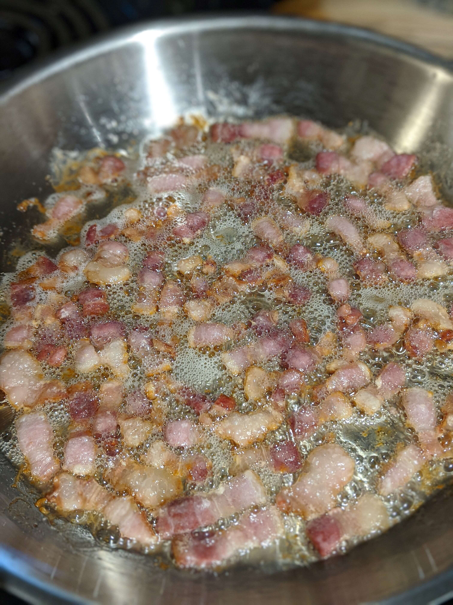
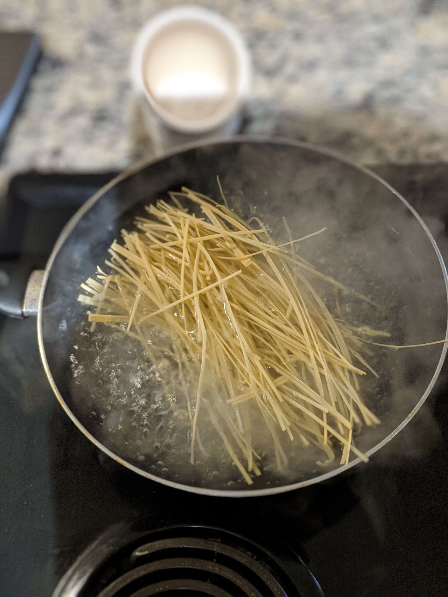

One of the most famous pasta sauces in Roman/Italian cuisine, this dish is traditionally made with cured porked cheek (guanciale), pecorino, and tomato. Guanciale isn't usually found in American stores, so I typically use bacon. Additionally, many of the variations I had in Rome involve a little bit of heat, so feel free to experiment with the red pepper flakes!
This red sauce is my personal favorite of all of Italy, and with 5 common ingredients it's easy to prepare!
Slice the bacon into 1/2 inch peices, you want to slowly render the fat out so that it's in the pan and not the meat.
You don't want to stir the bacon too often though, you want to let some of the meat stick to the bottom of the pan to develop a "fond"
Remove the bacon from the pan and add red chili pepper flakes.
I know 1 teaspoon may seem like a lot, and it is! However the capsaicin which is responsible for the spiciness in food is hydrophoic, meaning its soluble in fat and alcohol. By frying up the flakes in fat(and again in wine later), you draw out the capsaicin into the dish and give your food a much more "even" heat that is far more pleasant than biting into a red pepper flake and getting a burst of heat that won't go away!
However, I know spiciness is subjective to every eater, so feel free to lower the amount to something more comfortable if you desire. Regardless, cook the red pepper until the pan starts to shift colors, about 3-5 minutes. Make sure the pan is lower to avoid burning the pepper
Now we add your wine! Like I said before, this will help mellow out all that heat in the dish as well from the alochol in the wine.
Using half a glass as a measurement is a quintessential trait of a traditional Italian grandmother (a "nonna") who never write down precise measurements in their food.
*And one last note, please please please use a good bottle of wine! It doesn't have to be very expensive, but if you wouldn't drink it then why would put it in your food?
Cook the sauce until it thickens up. A reduction of about half the volume is good, it could almost be described as a syrup.
Add in your tomatoes. Brining it to a simmer and cook for at least 20 minutes. Have you heard of the saying "time is the best ingredient"? Well for many Italians cooking a red sauce for less than 20 minutes is almost sacrilegious.
It takes time for the flavors to come together, so be patient!
Alright, now its time to get your pasta cooking. Here's a great trick I learned: boil your pasta in a pan! It takes far less water, which means that getting that H20 to boil takes much less time! We also want to concentrate as much starch coming out of the pasta as possible. Store-bought spaghetti will just perfectly it in a 12 inch skillet.
But back to that pasta water. The starchy water is what makes our sauce "creamy". Since our red sauce has been cooking for awhile, it needs some hydration to thin it out. So about halfway through your pasta cooking, take some water out and add it to pan.
When your pasta is al dente, drag it out of the frying pan and into the fire...I mean sauce. Let some of the pasta water come along with it too, and reserve ther rest of the liquid.
Crank the heat to high, add your cheese, and stir, stir, stir!
It's gonna look a little soupy and thin at first, but remember that the pasta still needs a minute or two to finish cooking. So enjoy the pasta facial while you stir. Add reserved liquid if needed. When the sauce looks thick and creamy and pasta is cooked you are done! Serve it up!
Garnish with some additional peccorino if you want. While you wait for it to cool here is a fun fact:
Did you know that for my entire trip I never had parmesan with any of my food in Italy? Every restaurante I ate at used Peccorino Romano for their cheese. Maybe because it's cheaper, or maybe because the flavor is more salty. But whatever the reason I use Peccorino as my main pasta cheese now.
Enjoy!